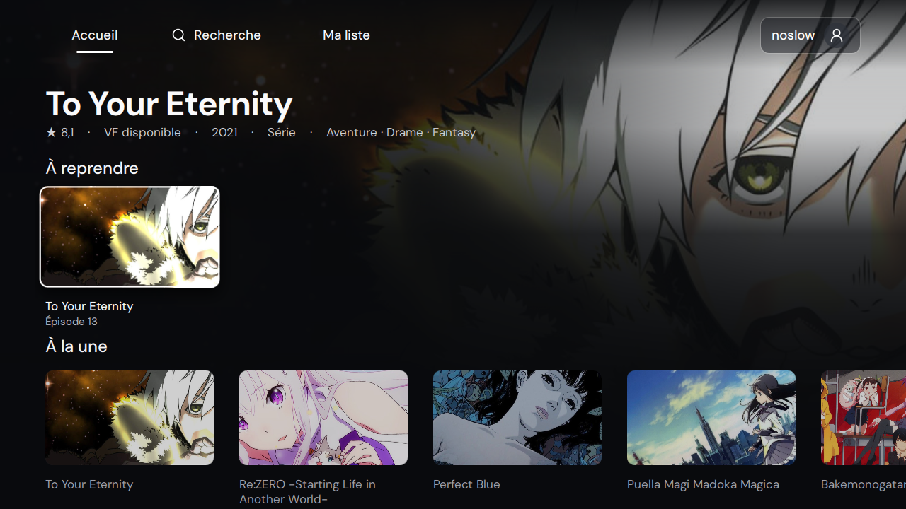

Bas entre dans les cartes. Haut/Bas changent de ligne et chaque ligne conserve sa carte. OK ou Retour retrouvent les boutons du héros, sans lancer un épisode.
Captures du vrai QML sur Windows, avec un instantané du catalogue PC et des images locales. Vidéos désactivées dans ce banc. Le titre très long est un cas de limite synthétique. Ces images ne valident pas la fluidité ni le rendu vidéo du Devialet.